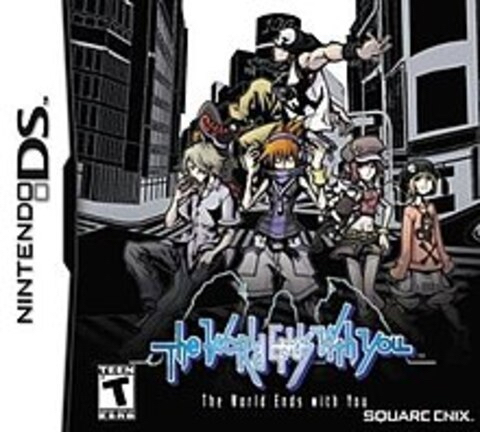
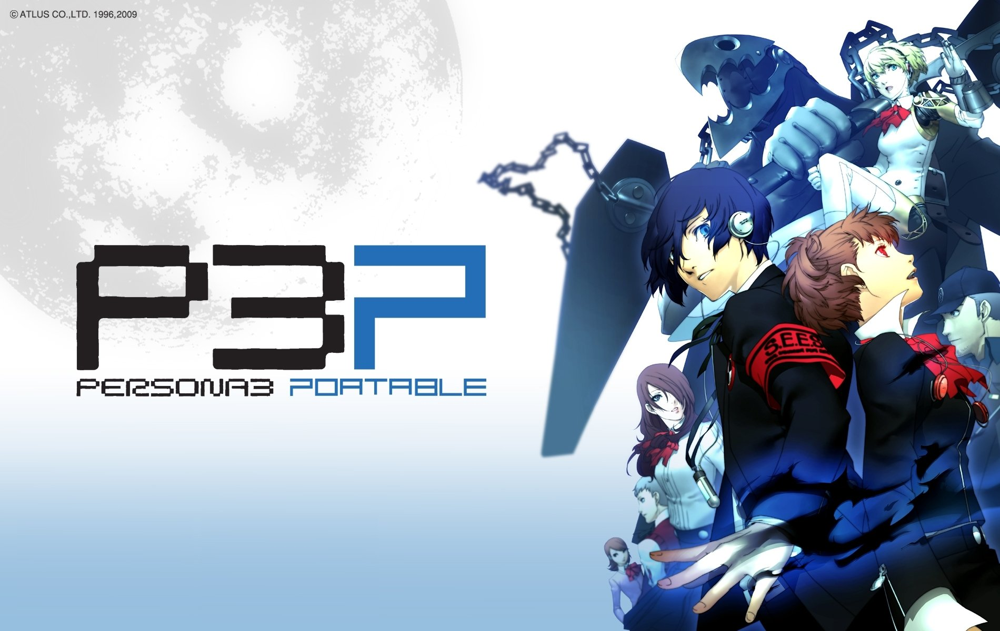

The World Ends With You (Nintendo DS)
Developer: Square Enix
Played By: Danny Dao
Description:
The World Ends With You was the game that made me fall in love with video games. The storytelling, the worldbuilding, and the overall art direction of the game changed me at an important time in my life. I was transitioning from middle school to high school and was a quiet kid with little to no social interaction. The World Ends With You's main character, Neku, was an asocial teenage boy who claims that he doesn't "get" people, and rarely interacts with others despite going through the busy streets of the Shibuya shopping district in Tokyo, Japan. One day, Neku, gets put into a death game where if he wins the game, he will be resurrected as a "higher" human being. Throughout his time in the games, he learns to establish friendships with all types of different people and breaks free of his asocial habits. This was one of the first games that taught me the importance of human social interaction and what it feels to make connections with people.
League of Legends (PC)
Developer: Riot Games

Played By: Danny Dao
Description:
League of Legends was my first online multiplayer game and it has led me to create many friendships with people all throughout the world. It's still a game that I return to do this day as it has a way of reconnecting people who haven't talked together for awhile. League of Legends, oddly enough, was the first competitive game that I enjoyed taking a more casual approach. Meeting people and having a good time together to try to beat the other team was what made it such a good game. This was the first game that made me have a huge appreciation for the diversity in digital art.
Persona 3 Portable(Playstation Portable)
Developer: Atlus
Played By: Danny Dao
Description:
Persona 3 truly taught me what it meant to live life in the face of an inevitable death while introducing me to an entire new genre of music. Persona 3 is a RPG that intertwines a character in high school with a night life of erasing demons from existence. What made Persona 3 stand out to me was each of the chracters' development and how they strive and choose to face death. Each character was faced with different circumstances and made the best out of what they were given. They never gave up hope. At this time, I was finding myself and figuring out who I was. Albeit Persona was a fantasy game, it reminded me of how important it was to make each day of our lives meaningful, that death was unavoidable, and who knows what goes on after that.